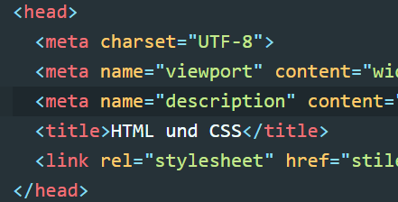
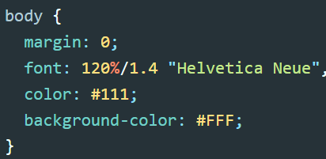

HTML
HTML steht nicht für "Hast Du Mich Lieb" und auch nicht für "Hier tauchen Mäuse-Liebhaber", sondern für Hypertext Markup Language (englisch für Hypertext-Auszeichnungssprache).
HTML ist eine textbasierte Auszeichnungssprache zur Strukturierung digitaler Dokumente wie Texte mit Hyperlinks, Bildern und anderen Inhalten. HTML-Dokumente sind die Grundlage des World Wide Web und werden von Webbrowsern dargestellt. Neben den vom Browser angezeigten Inhalten können HTML-Dateien zusätzliche Angaben in Form von Metainformationen enthalten, z. B. über die im Text verwendeten Sprachen, den Autor oder den zusammengefassten Inhalt des Textes.
CSS
CSS bezeichnet das Computerspiel "Counter Strike" und könnte auch für "Chaos siegt sicher" stehen. In unserem Zusammenhang bedeutet die Abkürzung aber Cascading Style Sheets (englische Aussprache [kæsˌkeɪdɪŋˈstaɪlʃiːts]; für gestufte Gestaltungsbögen)
CSS ist eine Stylesheet-Sprache für elektronische Dokumente und zusammen mit HTML und DOM eine der Kernsprachen des World Wide Webs. Sie ist ein sogenannter „living standard“ (lebendiger Standard) und wird vom World Wide Web Consortium (W3C) beständig weiterentwickelt. Mit CSS werden Gestaltungsanweisungen erstellt, die vor allem zusammen mit den Auszeichnungssprachen HTML und XML (zum Beispiel bei SVG) eingesetzt werden.
CSS wurde entworfen, um Darstellungsvorgaben weitgehend von den Inhalten zu trennen. Wenn diese Trennung konsequent vollzogen wird, werden nur noch die inhaltliche Gliederung eines Dokumentes und die Bedeutung seiner Teile in HTML oder XML beschrieben, während mit CSS gesondert davon, vorzugsweise in separaten CSS-Dateien, die Darstellung der Inhalte festgelegt wird (z. B. Layout, Farben und Typografie).